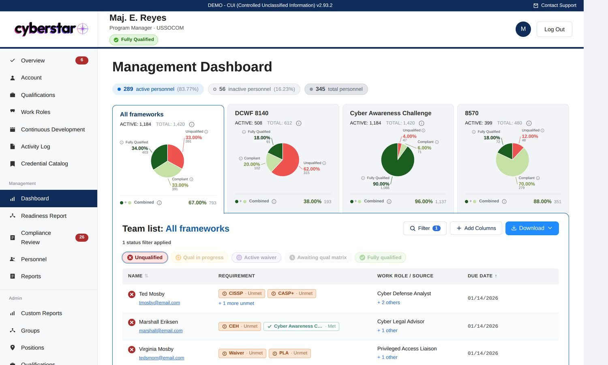
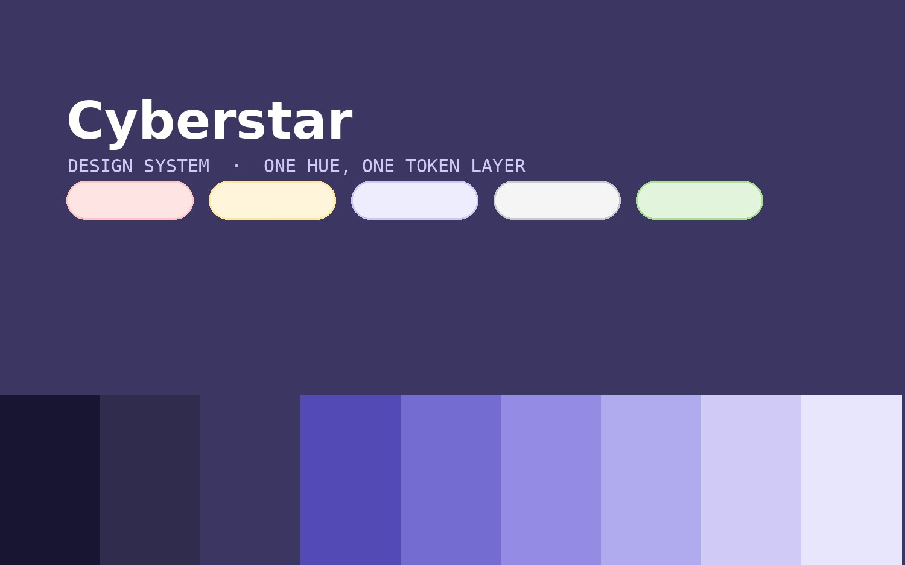
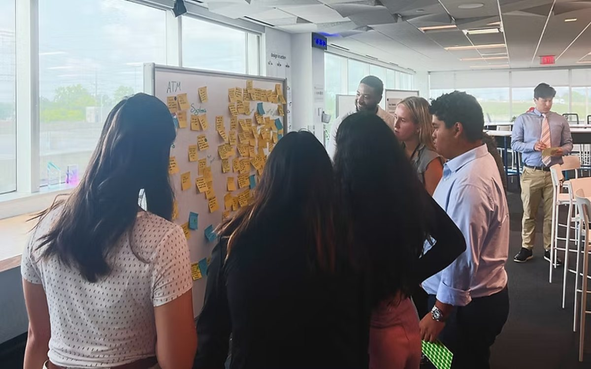
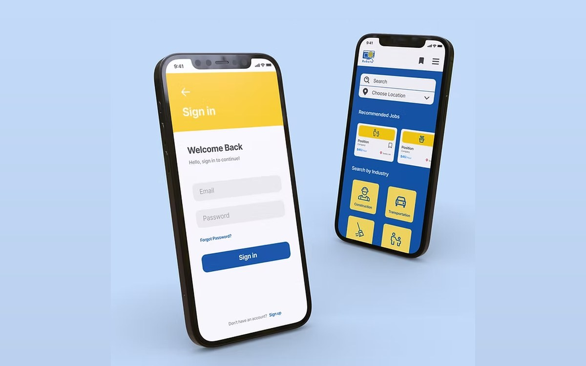
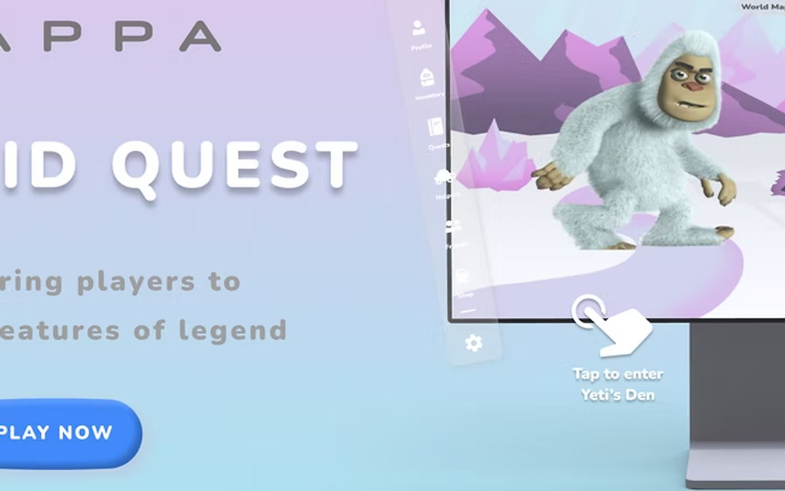
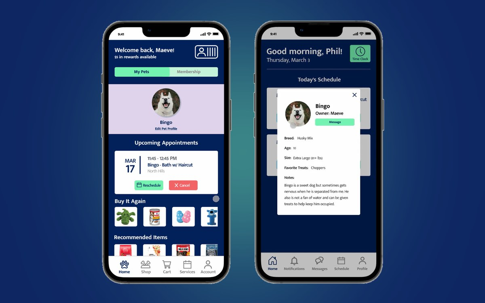

CASE STUDIES
Work
Enterprise software for people who have to use it, not people who chose it. Compliance tooling for federal defense agencies, a design system built against a six-developer team, and a multi-channel campaign in mortgage lending.

Management dashboard redesign
Rebuilding how compliance officers track workforce qualifications across thousands of DoD personnel records. Two research rounds, a facilitated workshop, and a taxonomy rebuilt before a line of it shipped.
Outcome: Taxonomy flaw caught before development
Design system and rebrand
A ground-up rebrand and tokenized system that embeds 8140 policy knowledge directly in the interface, where the decisions get made.
Outcome: One hue, one token layer
Mortgage conditional approval campaign
Research, strategy, writing and design for a seventeen-week cadence across nine channels that kept approved borrowers moving toward a completed application.
Outcome: Call scripts standardized bank-wide
Corporate center design thinking workshop
Designing and facilitating a half-day Design Thinking 101 workshop for twelve corporate center interns, from branch observation through prioritized ideas.
Outcome: Journey mapping rated 4.8 of 5
Robota — job matching for Ukrainian refugees
A mobile job-matching platform designed and built in a 2.5-day sprint with two designers and six engineers.
Outcome: Innovation Track and Crowd Favorite
Cryptid Quest — game UI and onboarding
UI and a three-day tutorial for a location-aware game, validated with a 41-person card sort and usability tested end to end.
Outcome: Testing found the story, not the UI, was broken
PetCo — booking and grooming app
One app with two portals — for pet owners booking grooming and the groomers doing it — joined by a service blueprint.
Outcome: Every employee tester finished in under 3 minutes